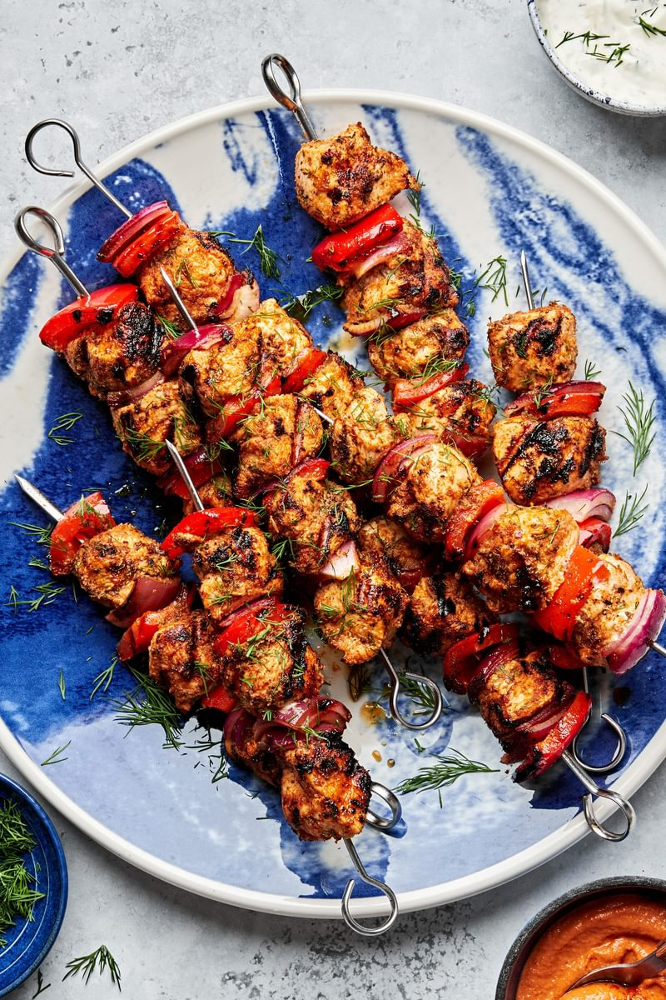

Chicken Kebabs Recipe

Chicken Kebabs
These flavorful chicken kebabs are easy to assemble and even easier to cook on the grill. Get your meat and veggies all on one skewer!
Ingredients
- ¼ cup fresh lemon juice (from 2 lemons)
- ¼ cup extra-virgin olive oil
- 3 tablespoons finely chopped fresh dill, plus more for serving
- 1 tablespoon dried oregano
- 1 tablespoon dried basil
- 2 teaspoons smoked paprika
- 2 teaspoons onion powder
- 1 tablespoon garlic powder
- 2 teaspoons kosher salt
- ¼ teaspoon freshly cracked black pepper
- 2 pounds boneless, skinless chicken breasts, cut into 1½-inch pieces
- 2 bell peppers, cut into 1-inch pieces
- 1 red onion, cut into 1-inch pieces
- Dill sauce, homemade or store-bought, for serving
- Romesco, homemade or store-bought, for serving
Steps
- In a large bowl combine the lemon juice, olive oil, dill, oregano, basil, paprika, onion powder, garlic powder, salt, and pepper. Add the chicken and toss to coat. Cover and let marinate at room temperature for at least 30 minutes or in the refrigerator for up to 3 hours.
- Preheat the grill on high (see Note). Remove the chicken from the marinade, allowing any excess to drip off. Thread the chicken, bell pepper, and onion onto metal or soaked bamboo skewers, dividing evenly. Place the skewers on the grill and cook, turning about every minute, until the chicken is browned and the veggies are beginning to char, about 4 minutes. Reduce the heart to low and cook, turning often, until the internal temperature of the chicken reaches 165°F on an instant read thermometer, about 10-12 minutes more.
- Arrange the skewers on a serving platter and sprinkle with dill. Serve with the dill sauce and romesco on the side.
Note: If you use bamboo skewers, be sure to soak them for an hour before using to prevent them from catching fire on the grill!
Back to Home